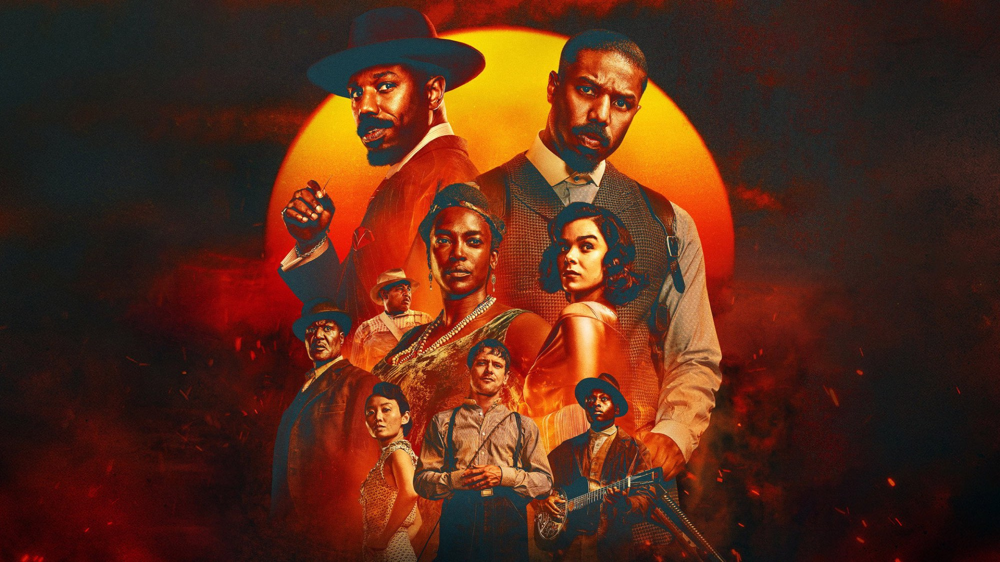
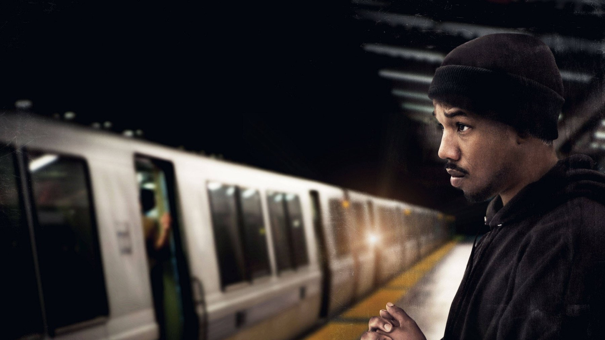
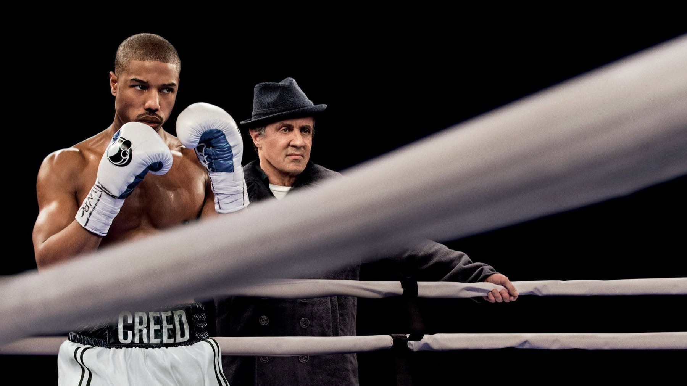
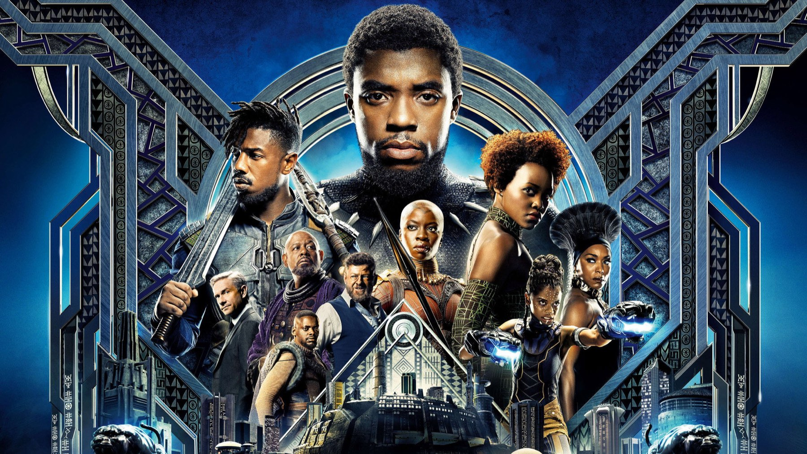

Ryan Coogler: da Fruitvale Station a Sinners
Un budget di 900 mila dollari, un miliardo e 350 milioni di incasso e un contratto che gli restituirà il film: come il regista di Oakland si è preso Hollywood
Nel 2012 Ryan Coogler girò il suo primo lungometraggio in venti giorni, a Oakland, con 900 mila dollari. Tredici anni dopo il suo film più recente ha ottenuto sedici candidature all'Oscar, il numero più alto mai raggiunto da un titolo, e un contratto con Warner Bros. che prevede una clausola rara: tra venticinque anni la proprietà del film tornerà a lui. In mezzo ci sono un pugile, un re africano e una storia di vampiri nel Mississippi. Ripercorriamo la carriera di un regista che dall'esordio indipendente è arrivato ai blockbuster senza mai perdere il controllo di ciò che racconta.
Da Oakland a Los Angeles
Coogler è nato a Oakland, in California, il 23 maggio 1986. La strada verso il cinema non è stata diretta: si è laureato in finanza alla California State University di Sacramento nel 2007 e solo dopo ha frequentato la scuola di cinema dell'Università della California del Sud (USC), dove ha conseguito il master nel 2011. Ai tempi dell'università ha girato i primi cortometraggi, tra cui Locks (2009), Fig e Gap (entrambi del 2011). Sono lavori brevi, ma dentro c'è già l'idea che lo accompagnerà: raccontare la comunità da cui viene, con personaggi che hanno un indirizzo preciso.
Fruitvale Station: l'esordio che cambia tutto

Il film d'esordio racconta l'ultimo giorno di vita di Oscar Grant III, un ragazzo di 22 anni ucciso da un agente della polizia della metropolitana di San Francisco (BART) alla stazione di Fruitvale, a Oakland, il 1° gennaio 2009. Michael B. Jordan interpreta Oscar, Octavia Spencer la madre. Tra i produttori c'è Forest Whitaker. Le riprese sono durate venti giorni, nel luglio 2012, in formato Super 16 millimetri, con un budget di 900 mila dollari.
Il film è stato presentato al Sundance il 19 gennaio 2013 con il titolo originale Fruitvale e ha vinto sia il Gran premio della giuria sia il premio del pubblico nella sezione dei film narrativi americani. Poi è passato a Cannes, nella sezione Un Certain Regard, dove ha ricevuto il premio per la migliore opera prima. L'incasso mondiale, circa 17,4 milioni di dollari, è stato modesto in assoluto ma enorme rispetto al costo. La scelta più intelligente di Coogler è stata trattare Oscar da persona, con le sue debolezze e le sue telefonate alla madre, e non da simbolo: per questo la tragedia finale colpisce così duramente.
Creed: il pugile che non era un sequel

Dopo l'esordio, nel 2013 la MGM chiama Coogler per un progetto inatteso: riportare in vita la saga di Rocky. Insieme allo sceneggiatore Aaron Covington sviluppa un'idea semplice e solida: un giovane pugile che cerca di seguire le orme del padre, il defunto Apollo Creed, e trova un mentore nel ritirato Rocky Balboa. Il film esce negli Stati Uniti il 25 novembre 2015, dopo la prima di Los Angeles del 19 novembre.
Michael B. Jordan è Adonis «Donnie» Creed, Sylvester Stallone torna a Rocky e ottiene una candidatura all'Oscar come miglior attore non protagonista. Con un budget stimato tra i 35 e i 40 milioni di dollari, Creed ha incassato circa 174 milioni nel mondo. Il dato che ci interessa di più, però, è un altro: Coogler dimostra che sa inserirsi in un'eredità enorme senza imitarla. Il film guarda a Rocky con rispetto, ma il punto di vista è quello di Adonis, non di Balboa.
Black Panther: un blockbuster con una voce d'autore

Con Black Panther, uscito negli Stati Uniti il 16 febbraio 2018, il salto di scala è vertiginoso: il film ha incassato 1,35 miliardi di dollari nel mondo, diventando il film con il maggior incasso diretto da un regista nero e il secondo del 2018. Coogler lo ha scritto insieme a Joe Robert Cole e si è circondato di collaboratori che tornano spesso nella sua carriera: il compositore Ludwig Göransson, la scenografa Hannah Beachler, la costumista Ruth E. Carter.
Il film ha ottenuto sette candidature agli Oscar e ne ha vinti tre, tra cui costumi (Carter) e colonna sonora (Göransson). È stato il primo film di supereroi candidato come miglior film e il primo dell'universo Marvel a vincere un Oscar. Il seguito, Black Panther: Wakanda Forever (2022), è costato circa 250 milioni di dollari e ne ha incassati circa 859, con cinque candidature e una statuetta. Sono numeri enormi, ma raccontano anche un'altra storia: dopo Wakanda Forever Coogler ha scelto di tornare a un progetto più personale.
La società di produzione e la libertà
Nel 2021 Coogler ha fondato Proximity Media insieme alla moglie Zinzi Evans e a Sev Ohanian, con un accordo di esclusiva di cinque anni con Disney. Non è un dettaglio da addetti ai lavori: è la struttura che gli permette di scegliere i progetti e di produrre anche film che non dirige. Ed è la base di ciò che è successo con Sinners, il film in cui tutti i pezzi del suo percorso si incastrano.
Sinners: il contratto che vale quanto il film
Sinners esce negli Stati Uniti il 18 aprile 2025, dopo una prima newyorkese del 3 aprile. È un horror ambientato nel Mississippi degli anni Trenta, con Michael B. Jordan in un doppio ruolo e la musica blues come cuore della storia. Il film è stato girato in pellicola 65 millimetri con telecamere IMAX a 15 perforazioni e Ultra Panavision 70, alternando due formati dell'immagine, 1,43:1 e 2,76:1: scelte da cinefili che a Coogler importano davvero. Per chi vuole i retroscena, abbiamo raccontato i più interessanti in Sinners di Ryan Coogler: 8 curiosità sul film.
La vera notizia è però l'accordo con Warner Bros. Coogler ha ottenuto una quota sui primi incassi lordi, il diritto all'ultima parola sul montaggio e, soprattutto, la proprietà del film che gli tornerà venticinque anni dopo l'uscita. Wikipedia riporta che il regista ha collegato questa scelta ai temi della proprietà e dell'eredità familiare, centrali nel film. Per un autore nero che racconta una storia di artisti che vogliono possedere il proprio locale e la propria musica, è una coerenza rara tra ciò che si dice e ciò che si firma.
Il budget è stimato intorno ai 100 milioni di dollari. Agli Oscar 2026 Sinners ha stabilito il record di sedici candidature e ne ha convertite quattro: miglior attore a Michael B. Jordan, miglior sceneggiatura originale, miglior colonna sonora e miglior fotografia, con Autumn Durald Arkapaw prima donna a vincere in questa categoria. Tutti i risultati della serata sono nel nostro Oscar 2026: tutti i vincitori, i record e le sorprese, e il film è tra gli otto consigliati in 8 horror da vedere in streaming per Halloween.
Cosa tiene insieme i suoi film
Guardati in fila, i film di Coogler hanno tre costanti. La prima è Michael B. Jordan, che compare in tutti, nei ruoli più diversi: il ragazzo di Oakland, l'erede di un campione, i due gemelli di Sinners. La seconda è la squadra: Göransson alla musica film dopo film. La terza è l'attenzione al luogo e alla comunità, che sia Oakland, un regno immaginario o il Mississippi degli anni Trenta: nessun suo film potrebbe svolgersi altrove.
C'è poi una differenza di metodo tra i primi lavori e gli ultimi. All'inizio Coogler dimostra di saper raccontare con pochissimo; con Black Panther dimostra di saper governare un apparato gigantesco; con Sinners usa la forza accumulata per ottenere ciò che a pochi registi viene concesso, cioè il controllo del risultato finale e, a lungo termine, del suo valore economico. Non è casuale che il film con cui ha avuto più libertà sia anche il più personale.
Da dove cominciare
Se non avete mai visto nulla di suo, il nostro consiglio è partire da Fruitvale Station: è il film più breve e crudo, e permette di capire che cosa c'era prima dei grandi numeri. Chi cerca il divertimento sicuro può passare a Creed, forse il suo titolo più immediato. Black Panther è il punto d'incontro tra blockbuster e autore, mentre Sinners merita una serata tutta per sé, con il volume alto. Per le piattaforme su cui trovarli, i cataloghi cambiano spesso: meglio un controllo su JustWatch prima di prenotare il divano.
Cinque film in dodici anni, da 900 mila dollari a un record di candidature: la carriera di Coogler dimostra che il successo più interessante non è l'incasso, ma la libertà di scegliere cosa raccontare. Con quale dei suoi film avete cominciato voi? Scriveteci su Instagram.
Domande frequenti
Quali film ha diretto Ryan Coogler?
Fruitvale Station (2013), Creed (2015), Black Panther (2018), Black Panther: Wakanda Forever (2022) e Sinners (2025).
Perché Sinners è un film storico per gli Oscar?
Ha ottenuto sedici candidature, il numero più alto mai raggiunto da un film, e ha vinto quattro statuette.
Che cosa prevede il contratto di Coogler per Sinners?
Una quota sui primi incassi lordi, l'ultima parola sul montaggio e la proprietà del film che torna al regista venticinque anni dopo l'uscita.